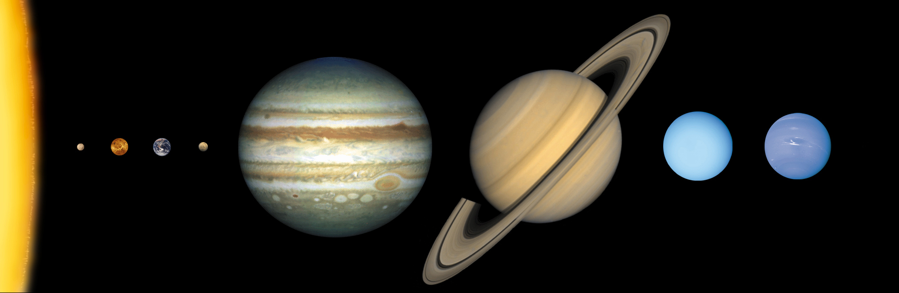

Explore the Solar System
Our Solar System has 1 star, the Sun, and 8 planets, Mercury, Venus, Earth, Mars, Jupiter, Saturn, Uranus and Neptune.
Pluto, once a planet, has become a dwarf planet.
Click on the images below to explore!

Planetary Orbit
The Solar System
*BEWARE* This picture does not represent the actual distance between each planet, only the order. The distance between each planet are very, very, very far apart! This picture does compare the difference in size of each planet.
How far do you think the planets apart from each other?
Watch the video below to see how the planets compare in size and distance.
Can you name each planet in order?
HintDraw your Solar System
The dwarf planet Pluto
The International Space Station.
Solar System Quiz
References
Images
NASA/JHUAPL/SwRI. 2015. Pluto. NASA. https://www.nasa.gov/image-article/rich-color-variations-of-pluto/
NASA/Crew of STS-132. 2010. International Space Station after undocking of STS-132. NASA. https://images-assets.nasa.gov/image/s132e012208/s132e012208~orig.jpg (https://images.nasa.gov/details-s132e012208)
NASA/SDO (AIA). 2010. The Sun by the Atmospheric Imaging Assembly of NASA's Solar Dynamics Observatory. NASA. http://sdo.gsfc.nasa.gov/assets/img/browse/2010/08/19/20100819_003221_4096_0304.jpg
NASA/Johns Hopkins University Applied Physics Laboratory/Arizona State University/Carnegie Institution of Washington. 2008. Mercury in true color. NASA. https://photojournal.jpl.nasa.gov/catalog/PIA11364
NASA/JPL-Caltech. 2019.Venus. NASA. https://www.nasa.gov/wp-content/uploads/2019/12/venus20191211-16.jpg
CC0 Public Domain.2021. Earth. https://phys.org/news/2021-10-nasa-technology-earth-focus-climate.html
USGS. 1980. Schiaparelli Hemisphere Enhanced. https://astrogeology.usgs.gov/search/map/schiaparelli_hemisphere_enhanced
NASA, ESA, J. Clarke (Boston University), and Z. Levay (STScI). 2004 . Saturn with auroras. NASA. http://hubblesite.org/gallery/album/solar_system/pr2005006b/
NASA/JPL-Caltech. 1986. Uranus as seen by NASA Voyager 2. NASA. https://science.nasa.gov/image-detail/amf-pia18182/
NASA/JPL-Caltech. 1989. Neptune as seen by NASA Voyager 2. NASA. https://science.nasa.gov/neptune/
Neil Armstrong. 1969. Apollo 11 Lunar Lander – 5927. NASA. https://commons.wikimedia.org/wiki/File:Apollo_11_Lunar_Lander_-_5927_NASA.jpg
NASA/Lunar and Planetary Institute. 2003. solarsys_scale-1.NASA. https://science.nasa.gov/resource/solar-system-sizes/
Youtube Videos
Inspire Education. 2021. Orbit of the Planets in the Solar System. https://www.youtube.com/watch?v=wwYegvdEJHg
NASAJPL Edu. 2020. Solar System Size and Distance. https://www.youtube.com/watch?v=DMZ5WFRbSTc